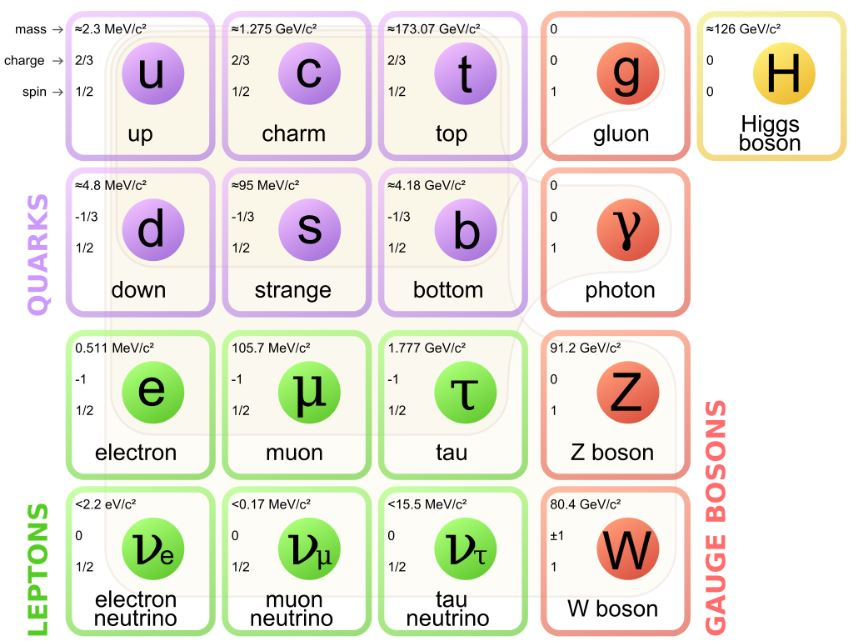

Nós, seres humanos, somos formados por diversas moléculas. Cada uma de nossas moléculas é formada por dois ou mais átomos. Esses átomos são compostos de duas partes principais: um núcleo e uma eletrosfera. O núcleo, por sua vez, é formado por uma certa quantidade de prótons e nêutrons, que são constituídos por partículas chamadas de quarks e glúons.
Existem seis tipos diferentes de quarks. Quark up, down, top, bottom, strange e charm. Cada um desses quarks possui uma propriedade chamada cor (sem relação com as cores do nosso dia a dia) que pode assumir os valores vermelho, azul ou verde. De modo similar ao fato de que um elétron tem carga elétrica, um quark tem carga de cor, mas isso não os impede de também ter carga elétrica, que é fracionária. Desse modo, podem existir até dezoito quarks diferentes, cada um com seu “sabor” e sua cor.
Do mesmo modo existem os antiquarks. Eles são as antipartículas dos quarks, o que significa que têm a mesma massa, mas cargas opostas.
Aos prótons e nêutrons, dá-se o nome hádrons, pois são formados por quarks. O próton, por exemplo, é formado por dois quarks up e um down. Já o nêutron, por dois quarks down e um up. Por serem constituídos por três quarks, os prótons e nêutrons são um tipo especial de hádron, ou seja, são bárions. Existe outro tipo de hádron, este por sua vez formado por um quark e um antiquark. Este hádron é chamado de méson.
No meio de todos esses quarks existe uma partícula que mantém os quarks unidos formando hádrons. Trata-se do glúon, uma partícula que intermedeia a força forte entre os quarks. Mas, o que seria a força forte? A força forte é uma das quatro forças fundamentais da natureza (as outras são a eletromagnética, a gravitacional e a força fraca). Tal força advém das cargas de cor que os quarks possuem e é transmitida através de glúons. Para efeito de comparação, a força eletromagnética é ligada à carga elétrica e é mediada através da troca de fótons.
Os glúons são as partículas que mantêm quarks e antiquarks juntos nos hádrons e prótons e nêutrons juntos dentro do núcleo atômico, daí o seu nome, que lembra a palavra cola em inglês. Vale ressaltar que quarks e glúons não existem livres na natureza, mas apensas confinados em hádrons.
Existem também outras partículas como o famoso bóson de Higgs, descoberto no LHC. Para saber mais visite o site Particle Adventure.
O Modelo Padrão de Partículas. Fonte: (https://en.wikipedia.org/wiki/File:Standard_Model_of_Elementary_Particles.svg)